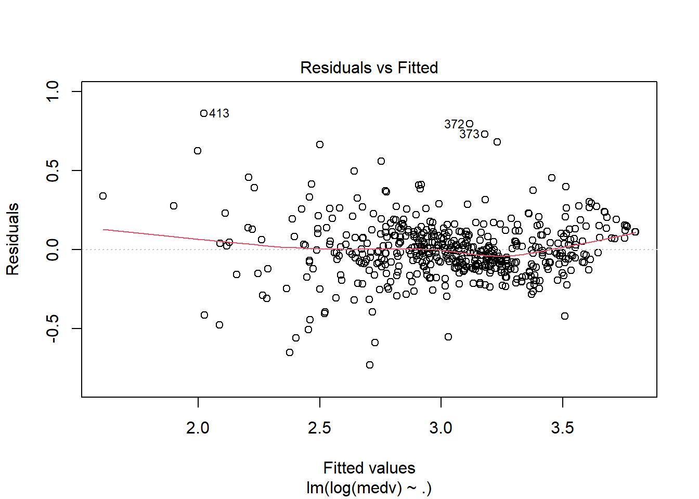
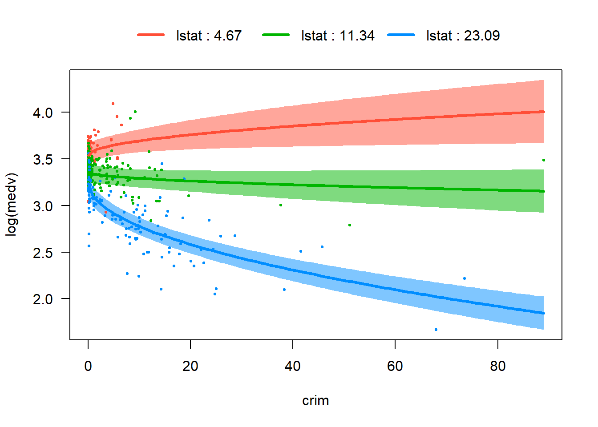
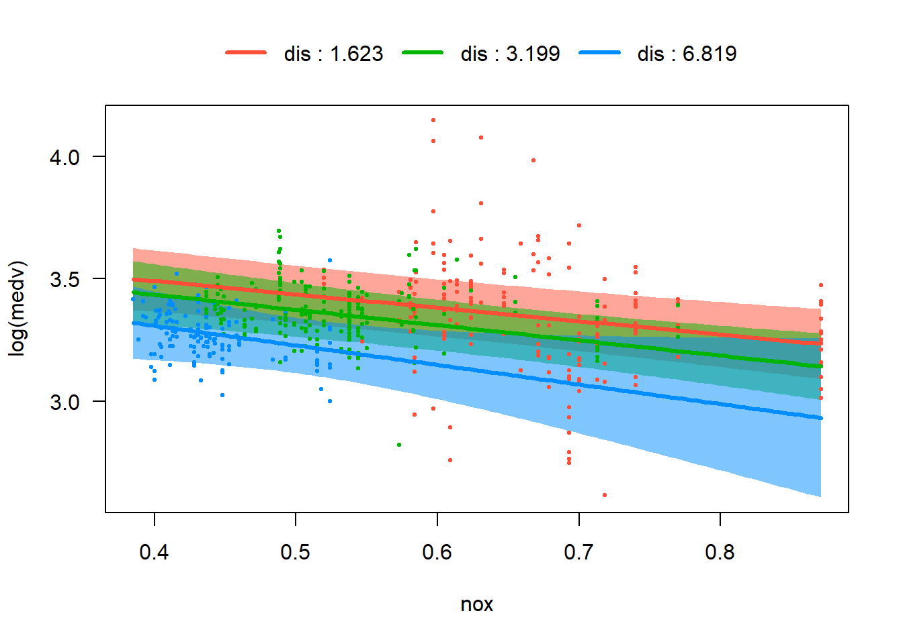
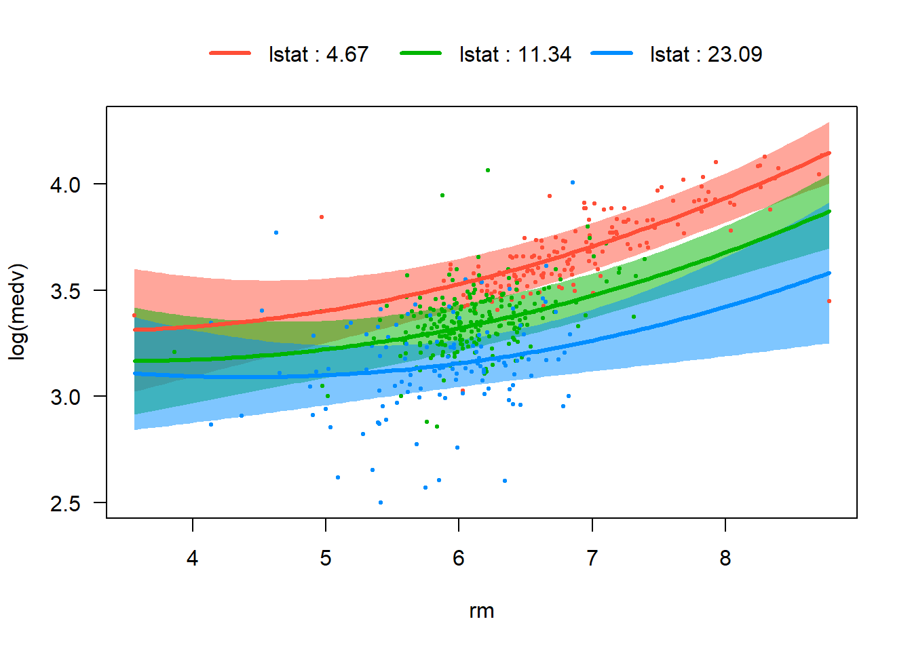
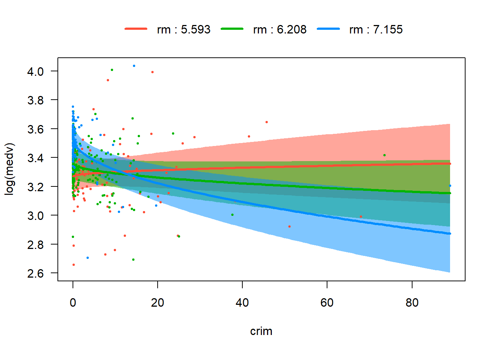

Based on the summary table, histograms, pair plots, and the correlation matrix, here are the main takeaways from the EDA:
The response medv is not perfectly symmetric and shows some upper-end compression, so a transformation of the response may help stabilize variance.
crim, zn, dis, black, and tax show strong skewness or long tails in the summary table, with crim especially right-skewed. This suggests that some nonlinear transformations may be useful.
The correlation matrix confirms that medv is most strongly negatively correlated with lstat and positively correlated with rm, which matches what we see in the pair plots.
The pair plots show some curved pattern between medv and some variables like crim, rm and lstat. This is a strong sign that some nonlinear transformations will be needed.
nox, indus, age and dis are highly correlated, positive or negative. These variables all describe urban intensity or location-related structure, so multicollinearity is a concern.
We see no obvious extreme outliers based on the pair plots. However we still need to run diagnostics.
14.2 Step 2: Start with All Predictors — Full Model
We begin with the full additive regression model.
fit_full <-lm(medv ~ ., data = Boston)summary(fit_full)
\(R_{adj}^2\approx0.7395525\) and \(R^2\approx0.7498672\).
The overall F-test has a very small p-value, indicating that at least one predictor is associated with the response variable.
indus, age and some of the rad levels are not signicant.
Then immediately do residual diagnostics on this full model:
From the residual plot, the red line is not flat, with a slight U-shape. In addition, residual variance increases slightly as fitted values increase.
From the Q-Q plot, points follow the line in the middle, but right tail bends upward, and several points deviate strongly.
From the scale-location plot, the red trend line has a slight U-shape, and the residual spread grows as fitted values increase.
From the residuals vs leverage plot, most points have low leverage with one is around 0.30, and no points have large Cook’s distance.
These suggest the following observations:
There are possible nonlinearity among variables.
There is a possible heteroscedasticity.
Residuals are not perfectly normal especially in the right tail.
There are no extremely influential observations.
Based on all the observations (from this section and the previous section), we would like to start from applying some nonlinear transformations to build the model.
14.3 Step 3: Consider Transformations
14.3.1 Check if log(medv) improves things
We begin by examining the response variable (because of the curvy residual plot and the slightly heteroscedasticity). To determine an appropriate transformation, we apply the Box–Cox procedure to search for a suitable power transformation of medv:
boxcox(fit_full)

The peak of the profile log-likelihood appears to occur around \(\lambda\approx0.1\). The \(95\%\) confidence interval for \(\lambda\) is slightly above \(0\), so \(0\) lies just outside the interval. This suggests that the optimal transformation is approximately \(y^{0.1}\). However, because \(0.1\) is very close to \(0\), the log transformation \(\log(y)\) is often used in practice. The log transformation is simpler, widely used, and produces a model fit very similar to the optimal Box–Cox transformation.
We therefore refit the model using log(medv) as the response.
fit_log <-lm(log(medv) ~ ., data = Boston)summary(fit_log)
Coefficients are interpreted as the approximate percentage change in the median of medv associated with a one-unit increase in the predictor, holding other variables constant.
\(R_{adj}^2\) and \(R^2\) increase slightly, indicating a small improvement in model fit.
However, the diagnostic plots show that the main issues (nonlinearity, heteroscedasticity, and non-normal residuals) are not substantially improved.
Therefore, transforming the response alone is not sufficient, and we need to consider additional model modifications, such as transformations of predictors, interaction terms, or nonlinear terms.
NoteInterpretation of \(\log(y)\)
Assume \[
\log(y)=\beta_0+\sum_{i=1}^k{\beta_i x_i}+\varepsilon=\beta_0+\mathbf{\beta_1x}+\varepsilon
\] Then \[
y=\me^{\beta_0}\me^{\mathbf{\beta_1x}}\me^{\varepsilon}=\me^{\beta_0+\varepsilon}\me^{\mathbf{\beta_1x}}.
\] Therefore if \(\mathbf{\Delta x}=[\Delta x_1,\Delta x_2,\ldots,\Delta x_k]\) are all small, \[
\begin{split}
\Delta y/y&=\qty(\me^{\beta_0+\varepsilon}\me^{\mathbf{\beta_1(x+\Delta x)}}-\me^{\beta_0+\varepsilon}\me^{\mathbf{\beta_1x}})/\me^{\beta_0+\varepsilon}\me^{\mathbf{\beta_1x}}=\qty(\me^{\mathbf{\beta_1(x+\Delta x)}}-\me^{\mathbf{\beta_1x}})/\me^{\mathbf{\beta_1x}}=\me^{\mathbf{\beta_1\Delta x}}-1\\
&\approx 1+\mathbf{\beta_1 \Delta x}-1=\mathbf{\beta_1 \Delta x}=\sum_{i=1}^k{\beta_i \Delta x_i}.
\end{split}
\] Then the interpretation should be:
A one-unit increase in \(x_i\) is associated with an approximate \(100 \cdot \beta_i \%\) change in the median of \(y\), holding all other predictors constant.
CautionThe “Mean vs. Median” Trap
When we assume the errors \(\varepsilon \sim N(0, \sigma^2)\) are symmetric, our OLS model estimates the conditional mean of \(\log(y)\). However, due to Jensen’s Inequality, \(e^{\operatorname{E}[\log(y)]}\) does not equal \(\operatorname{E}[y]\). Instead:
\(\me^{\hat{y}}\) provides an estimate of the Median of \(y\).
The Mean of \(y\) is actually shifted by a correction factor: \(\operatorname{E}[y] = \text{Median}(y) \cdot \me^{\sigma^2/2}\).
If you do not wish to apply the correction factor, you should strictly interpret your results as the percentage change in the median of \(y\) rather than the mean, just like what we did in the above note block.
Based on the partial residual plots, it appears that crim, rm, and lstat exhibit some curvature. Therefore, we consider applying transformations to these variables.
From the earlier EDA, we observed that crim is strongly right-skewed. A common way to address this is to apply a transformation such as log(crim) or sqrt(crim), both of which reduce right skewness by compressing larger values. In either case, the original variable crim must be removed from the model and replaced by its transformed version.
To determine which transformation is more appropriate, we compare their model performance and examine the corresponding partial residual plots.
Both transformations substantially straighten the partial residual plot, indicating that the nonlinear pattern in crim is largely removed.
From the partial residual plots alone, it is difficult to determine which transformation is preferable.
From the perspective of the variable distribution, log(crim) spreads the data more evenly than sqrt(crim).
However, in terms of model performance, such as \(R^2_{adj}\) and AIC, the model using sqrt(crim) performs slightly better. In particular, the AIC is slightly smaller, indicating a better balance between goodness of fit and model complexity.
Taking all these considerations into account, we choose to use sqrt(crim) in the model. Under this transformation, the effect of crim on log(medv) becomes nonlinear: the marginal impact of crime decreases as crim increases, meaning that the slope becomes smaller for larger values of crim.
We then examine the full set of partial residual plots again to check for any remaining unusual patterns. No additional strong nonlinear effects are observed.
Analysis of Variance Table
Model 1: log(medv) ~ (crim + zn + indus + chas + nox + rm + age + dis +
rad + tax + ptratio + black + lstat) - crim + sqrt(crim)
Model 2: log(medv) ~ (crim + zn + indus + chas + nox + rm + age + dis +
rad + tax + ptratio + black + lstat) - crim + sqrt(crim) +
I(rm^2) + I(lstat^2)
Res.Df RSS Df Sum of Sq F Pr(>F)
1 485 17.551
2 483 14.908 2 2.6436 42.826 < 2.2e-16 ***
---
Signif. codes: 0 '***' 0.001 '**' 0.01 '*' 0.05 '.' 0.1 ' ' 1
This shows that rm^2 and lstat^2 are significant to be added. For crim, since we replace it with sqrt(crim) instead of adding a term, we cannot directly use the nested ANOVA since these are not nested models. We then use AIC to test which model is better.
fit_sc2 <-lm(log(medv) ~ . +I(rm^2) +I(lstat^2), data = Boston)AIC(fit_sc2, fit_sqrtcrim)
fit_sqrtcrim has a slightly lower AIC. Therefore we would go with fit_sqrtcrim as our transformed variable model.
14.3.3 Interaction terms
In the Boston housing dataset, some pairs of predictors naturally suggest possible interaction terms. For instance, crim and lstat both reflect neighborhood socioeconomic conditions, so the impact of crime on housing price may depend on the socioeconomic status of the neighborhood. The variables nox and dis may also interact, since pollution and distance to employment centers jointly describe environmental and location quality. In addition, rm and lstat could interact because the value added by larger houses may differ across neighborhoods with different income levels. Exploring these interaction terms helps determine whether the relationship between predictors and the response changes across different conditions.
Possible interaction terms in the Boston dataset include:
crim × lstat: crime and socioeconomic status both describe neighborhood disadvantage.
nox × dis: pollution and distance jointly characterize environmental and location quality.
rm × lstat: the value of larger houses may depend on neighborhood socioeconomic status.
rm × crim: the price premium of larger houses may differ in high-crime areas.
We first use visreg to quickly screen these ideas.
visreg(fit_ints, "crim", by ="lstat", overlay =TRUE)

visreg(fit_ints, "nox", by ="dis", overlay =TRUE)

visreg(fit_ints, "rm", by ="lstat", overlay =TRUE)

visreg(fit_ints, "crim", by ="rm", overlay =TRUE)

From these four plots, we are able to visualize differences in slopes across levels of the interacting variable. However nox bydis and rm by lstat are weaker, and their p-values are relative big. Therefore we would only keep lstat:sqrt(crim) and rm:sqrt(crim) in our tentative model and proceed to the next test phase.
We need to pick 20 variables, and from the table, the variables we need to remove are zn, indus and age. Since rad is a categorical variable represented by multiple dummy variables, all levels must be kept together in the model. Even if some individual coefficients are not significant, we should test the significance of the entire factor using an F-test rather than removing individual levels.
Polynomial and interaction terms often lead to higher VIF values because they are inherently correlated with the variables from which they are constructed. In this model, variables such as rm, lstat, and sqrt(crim) appear together with their squared terms or interaction terms, which naturally induces multicollinearity. This behavior is expected when a variable and its polynomial, transformed, or interaction terms are included in the model. Therefore, moderately large VIF values in this situation do not necessarily indicate a problem and are not, by themselves, a reason to remove these terms.
the largest absolute studentized residual is about \(4.9\),
12 observations exceeding the rule-of-thumb threshold of \(3\),
about \(31\) observations have Cook’s distance greater than \(4/n\),
roughly 30 observations exceed the \(2p/n\).
These values indicate the presence of some unusual observations, which is not surprising for a dataset of this size and with a model containing several nonlinear and interaction terms. However,
none of the observations appear to be extremely influential.
Unless these observations correspond to data entry or measurement errors, it is generally preferable to keep them in the analysis and simply report their presence.
To improve interpretability and reduce VIF values, we may center some of the variables. The vif output shows relatively large values for sqrt(crim), rm, lstat, and their associated polynomial and interaction terms. This occurs because such terms are naturally correlated with the variables from which they are constructed. Therefore we center these variables before forming the polynomial and interaction terms.
Note that centering is not required for statistical correctness. It does not change the fitted values or overall model fit, but it can reduce VIF values and make the coefficients easier to interpret.
These plots are substantially improved compared with those from the original untransformed model:
The residuals versus fitted plot shows no strong systematic pattern, indicating that the nonlinear terms have largely captured the curvature present in the original model.
The spread of the residuals is more stable across fitted values, although a mild heteroscedastic pattern may still remain.
The Q–Q plot follows the reference line reasonably well in the center but shows deviations in the tails, indicating mild departures from normality.
The Scale–Location plot suggests that the variance is more stable than in the original model, although a mild heteroscedastic pattern may still remain.
The residuals versus leverage plot shows several observations with moderate leverage, but none appear to have extremely large Cook’s distance values.
Overall, the diagnostic plots suggest that the refined model satisfies the regression assumptions much better than the original additive model.
Transforming the response using log(medv) is supported by the Box–Cox analysis and helps stabilize the variance.
Adding quadratic, interaction, and transformed terms captures nonlinear patterns that the simple additive linear model cannot represent.
The final model explains about 85% of the variation in log(medv), with an adjusted \(R^2_{adj}\) around \(0.84\). The residual standard error is \(0.1619\).